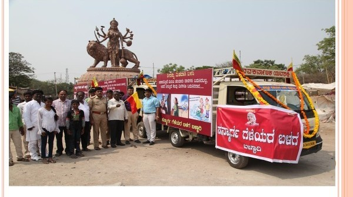

Environment 28-03-2016
📍 Ballari City Center
Save Water Public Campaign
A city-wide mobilization campaign educating citizens on rainwater harvesting, preventing tap leakage, and conserving water during extreme summer.
Click to view full story 🔍